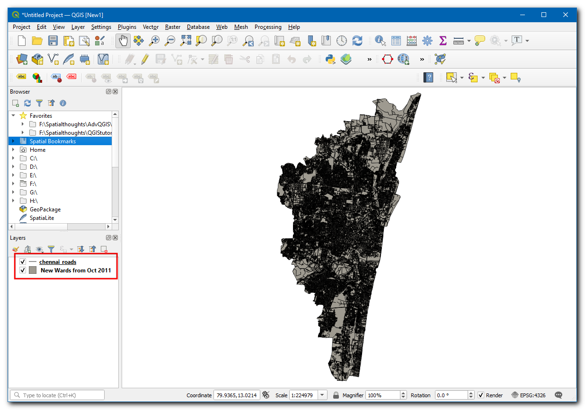
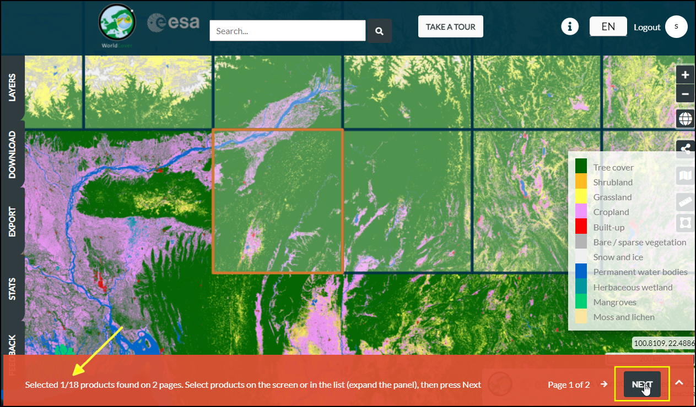
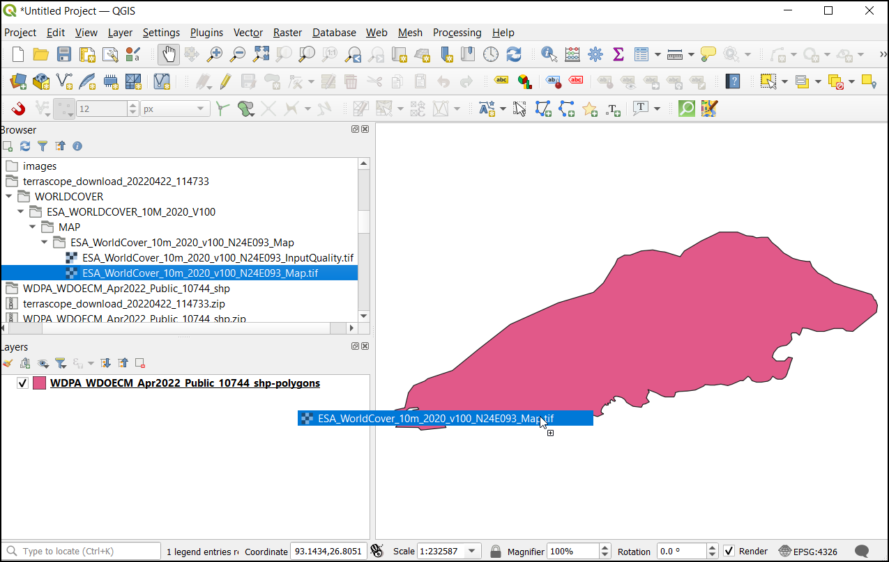
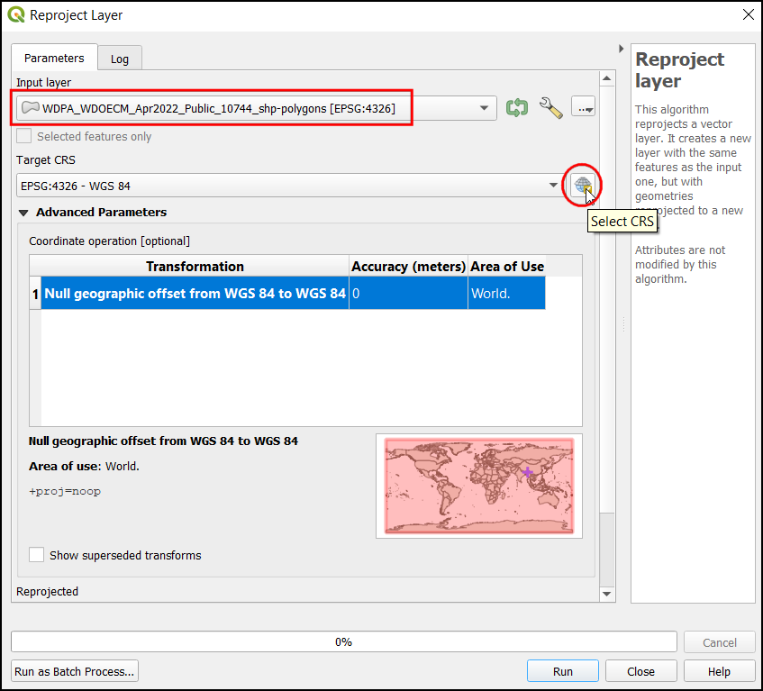
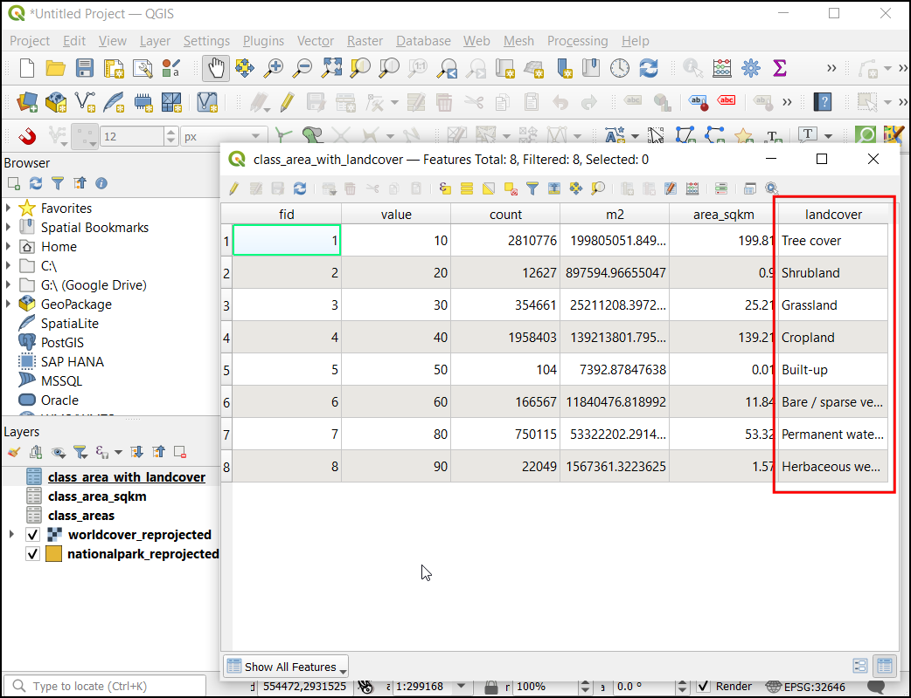
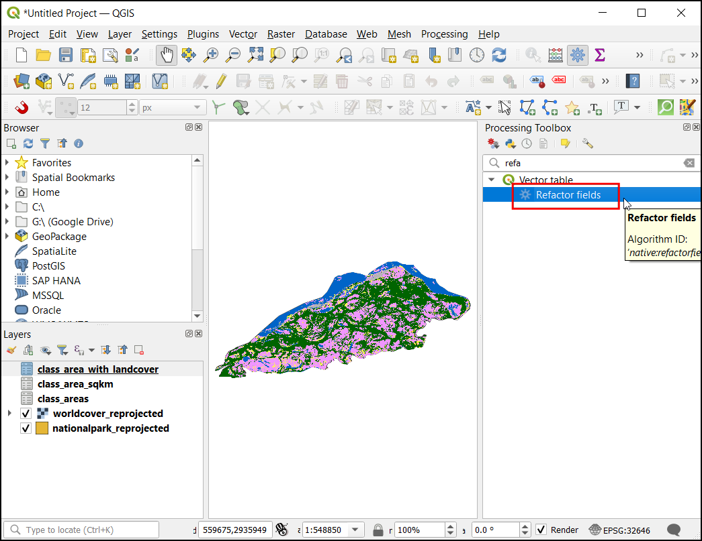

Rastergebied berekenen (QGIS3)¶
Vel toepassingen vereisen het kwantificeren van patronen van landgebruik in een regio. Gegevenssets van Land Use Land Cover (LULC) zijn rasterbestanden, waarin aan elke pixel een klassewaarde is toegewezen. GIS-analisten moeten vaak rapporten maken die zijn gebaseerd op deze gegevens door het berekenen van het gebied per klasse in een bepaalde regio. QGIS heeft vele ingebouwde gereedschappen om rastergebieden te berekenen en samen te vatten.
Notitie
Historisch was de voorgestelde benadering voor het berekenen van gebieden voor rasters om het raster te converteren naar een vectorlaag en technieken voor het berekenen van het vectorgebied te gebruiken. Deze benadering vereist intensieve berekeningen van de computer en foutgevoelig. De aanbevolen benadering is om het gereedschap van Processing Rasterlaag rapport unieke waarden te gebruiken, dat direct de pixelgebieden kan berekenen. Als u een laag heft met veel polygonen en gebieden voor elk daarvan nodig hebt, kunt u het gereedschap Zonehistogram gebruiken om tellingen van pixels te verkrijgen voor elke klasse en ze dan vermenigvuldigen met het gebied van elke pixel.
Overzicht van de taak¶
We zullen een rasterlaag gebruiken met 11 klassen voor landgebruik en het gebied van elke klasse berekenen binnen een nationaal park. We zullen ook achteraf de resultaten bewerken om een werkblad te maken met namen van klassen en hun gebieden.
Andere vaardigheden die u zult leren¶
Hoe symbologie toe te passen op een laag vanuit een stijlbestand in de indeling .qml.
Hoe expressies te schrijven met meerdere voorwaarden if/else met het argument CASE.
Hoe een tabel van QGIS te exporteren als een werkblad voor Excel.
De gegevens ophalen¶
We zullen de volgende gegevenssets downloaden
World Database on Protected Areas (WDPA): We zullen het shapefile voor de grenzen van het Kaziranga National Park in India downloaden.
ESA WorldCover 2020: Het product WorldCover 10 m 2020 van het Europese Ruimte Agentschap (ESA) verschaft een globale kaart met landgebruik over 2020 met 10 m resolutie. We zullen de tegel downloaden die ons gebied van interesse bedekt.
Park grenzen¶
Ga naar de website Protected Planet en klik op de zoekbalk. Zoek naar
Kaziranga National Park.

De beschermde vectorgrenzen zullen worden weergegeven als zoekresultaat. Klik er op om de pagina voor het Kaziranga National Park te bekijken.

Deze pagina zal aanvullende informatie bevatten, zoals totale gebied, gemaakte jaar, etc. Klik op de knop Download en klik op SHP om de gegevens in de indeling Shapefile te downloaden.

Twee opties voor downloaden zullen worden aangeboden. Klik op continue onder Non Commercial Use. Nu zal een zip-bestand met de grenzen van het nationale park worden gedownload.

Gegevens over landgebruik¶
Ga naar de website ESA WorldCover en klik op het menu DATA ACCESS.

Scroll nar beneden naar het gedeelte DATA DOWNLOAD en klik op de link om de WorldCover viewer te openen.

U zult een gratis account moeten maken om de gegevensset te kunnen downloaden. Klik op de link Register in de rechterbovenhoek. Volg de instructies om een nieuw account te maken.

Na het maken van het account, log in met uw gegevens. Ons gebied van interesse voor deze handleiding is het Kaziranga National Park. Zoom in op de regio in het noordoosten van India. Als u eenmaal voldoende bent ingezoomd zal het begrenzingsvak voor de tegels voor het landgebruik verschijnen.

Zoek en lokaliseer de tegelregio
N24E093.

Selecteer de tegel en klik op NEXT.

Click on the DOWNLOAD to download a zip file containing the landcover information in raster format. Make sure to select WorldCover Version 1 data for download.

We zullen ook een bestand voor symbologie downloaden dat wordt verschaft door ESA. Bezoek de pagina ESA WorldCover Data Access., Scroll naar beneden naar het gedeelte Symbology. Klik op QGIS om het bestand ESAWorldCover_ColorLegend.qml te downloaden, dat kan worden gebruikt om de rasterlaag op te maken met toepasselijke kleuren en labels voor klassen.

Voor het gemak kunt u direct een kopie van de gegevensset downloaden vanaf de links hieronder:
Kaziranga National Park Boundary WDPA_WDOECM_Apr2022_Public_10744_shp_0.zip
ESA WorldCover Tile N24E093 subset terrascope_download_20220422_114733.zip
ESA WorldCover QML Style-bestand ESAWorldCover_ColorLegend.qml
Gegevensbron [WDPA] [WorldCover]
Procedure¶
Pak alle gedownloade bestanden uit. In de Browser, lokaliseer de map die het bestand met de grenzen
WDPA_WDOECM_Apr2022_Publicc_10744_shp-polygons.shpbevat en sleep het naar het kaartvenster van QGIS en zet het neer.

Lokaliseer nu de rastertegel van Worldcover
ESA_WorldCover_10m_2020_v100_N24_E093_Map.tifen sleep die naar het kaartvenster van QGIS.

U hebt nu zowel de vectorgrenzen als de rasterlaag met landgebruik geladen in het paneel Lagen. Laten we de rasterlaag clippen tot de grenzen van het nationale park. Ga naar om de Toolbox van Processing te openen. Zoek naar en lokaliseer het algoritme . Dubbelklik om het te starten.

Kies, in het dialoogvenster Raster op maskerlaag clippen, de laag
ESA_WorldCover_10m_2020_v100_N24_E093_Mapals de Invoerlaag en de laagWDPA_WDOECM_Apr2022_Publicc_10744_shp-polygonsals Maskeerlaag. Voer-9999in het gedeelte Wijs een specifieke waarde Geen data toe aan de uitvoerbanden in.
Open nu het gedeelte Gevorderde parameters en kies
Hoge compressiein Profiel. Klik nu, onder Geclipt (masker), op de…en selecteer Opslaan als bestand…. Voer als bestandsnaam inworldcover_clipped.tif. Klik op Uitvoeren.

Nu zal de laag
worldcover_clippedworden geladen in het kaartvenster van QGIS. Klik met rechts op de laagESA_WorldCover_10m_2020_v100_N24_E093_Mapen selecteer Laag verwijderen…

Beide lagen zijn in het geografische CRS
EPSG:4326. Dit CRS heeft graden als eenheden en is niet geschikt voor het berekenen van het gebied. We moeten eerst de lagen opnieuw projecteren naar een geprojecteerd CRS. Voor regionale analyses zoals deze is UTM een goede keuze voor een geprojecteerd CRS. We zullen de lagen opnieuw projecteren naar het CRS voor de lokale zone van UTM. Open de Toolbox van Processing en zoek naar het algoritme . Dubbelklik om het te starten.

Kies, in het dialoogvenster Laag opnieuw projecteren, de laag
WDPA_WDOECM_Apr2022_Publicc_10744_shp-polygonsals de Invoerlaag, klik op de knop CRS selecteren onder Doel-CRS.

Ons gebied van interesse valt in de UTM Zone 46N. Zoek naar 46 N en selecteer het CRS
WGS 84 / UTM zone 46N.

Notitie
Bekijk de website What UTM Zone am I in om uit te vinden welke UTM zone voor uw regio van toepassing is.
Klik, in het gedeelte Opnieuw geprojecteerd, op
…en selecteer Opslaan als bestand…. Voer als naam innationalpark_reprojected.gpkg. Klik op Uitvoeren.

Nu zal de laag
nationalpark_reprojectedworden geladen in het kaartvenster. Klik met rechts op de laagWDPA_WDOECM_Apr2022_Publicc_10744_shp-polygonsen selecteer Laag verwijderen… om die te verwijderen. Nu zullen we de rasterlaag opnieuw projecteren. In de Toolbox van Processing, zoek n lokaliseer

Kies, in het dialoogvenster Warp (opnieuw projecteren),
worldcover_clippedals de Invoerlaag, selecteer CRSWGS 84 / UTM zone 46Nin Doel-CRS. Open de Gevorderde parameters en kiesHoge compressiein Profiel.

Klik nu onder Opnieuw geprojecteerd, op
…en selecteer Opslaan als bestand…. Voer als naam inworldcover_reprojected.tif. Klik op Uitvoeren.

Nu zal de laag
worldcover_reprojectedworden geladen in het kaartvenster, verwijder de laagworldcover_clipped. Laten we de projectlaag instellen voor de UTM zone. Klik op een willekeurige layer en kies .

Nu zal het project-CRS worden bijgewerkt. Laten we de symbologie van de rasterlaag instellen als per klassenaam en de kleuren van de ESA WorldCover-gegevensset. Klik met rechts op de laag
worldcover_reprojecteden klik op Eigenschappen…

Kies, in het dialoogvenster Laageigenschappen, Symbologie. U kunt zien dat de kleuren van de laag zijn gevisualiseerd in een wit-zwart toon. Klik, om dit te repareren, op . Blader naar en selecteer het bestand
ESAWorldCover_ColorLegend.qml.

Nu kunt u de bijgewerkte symboolkleuren en beschrijvingen van klassen zien. Klik op OK.

Vergroot de laag
worldcover_reprojectedin het paneel Lagen om de legenda met de juiste beschrijvingen van klassen te bekijken.

Laten we nu de gebieden voor elke klasse berekenen. In de Toolbox van Processing, zoek en lokaliseer het gereedschap Rasterlaag rapport unieke waarden. Dubbelklik om het te openen.

Kies, in het dialoogvenster Rasterlaag rapport unieke waarden, de Invoerlaag als
worldcover_reprojected. Klik, onder de Tabel Unieke waarden op…en kies Opslaan als bestand…. Voer als naam inclass_areas.gpkg. Klik op Uitvoeren.

Nu zal de laag
class_areasworden toegevoegd aan het paneel Lagen. Klik met rechts op de laag en klik op Attributentabel openen. De kolomm2bevat het gebied voor elke klasse in vierkante meters.

Laten we het gebied converteren naar vierkante kilometers. In de Toolbox van Processing, zoek en selecteer .

Selecteer, in het dialoogvenster Veld calculator, de laag
class_areasin Invoerlaag. Voer de Veldnaam in alsarea_sqkm. KiesFloatals het Type resultaatveld. In het venster Expressie, voer onderstaande expressie in. Dit zal de vierkante meters converteren naar vierkante kilometers en het resultaat afronden op 2 decimale plaatsen. Klik,onder Berekend op…en kies Opslaan als bestand… . Voer als naam inclass_area_sqkm.gpkg. Click Run.
round("m2"/ 1e6, 2)
Nu zal de laag
class_area_sqkmworden geladen in het kaartvenster. Open de attributentabel en bekijk de nieuw toegevoegde kolom area_sqkm. U zult zien dat de kolom Value getallen bevat voor elke klasse. Laten we ook de beschrijving voor elk getal voor en klasse toevoegen om de resultaten eenvoudiger te interpreteren te maken. De beschrijvingen voor de klassen zijn beschikbaar in het ESA Product User Manual.
Open Veld calculator en selecteer de laag
class_areas_sqkmin Invoerlaag. Voer de Veldnaam in alslandcover, kiesTekst (string)in het Type resultaatveld. Voer in het venster Expressie de onderstaande expressie in. Deze expressie gebruikt het argument CASE om een waarde toe te wijzen, gebaseerd op meerdere voorwaarden. Klik, onder Berekend op …` en kies Opslaan als bestand…. Voer als naam inclass_area_with_landcover.gpkg. Klik op Uitvoeren.
CASE WHEN "value" = 10 THEN 'Tree cover' WHEN "value" = 20 THEN 'Shrubland' WHEN "value" = 30 THEN 'Grassland' WHEN "value" = 40 THEN 'Cropland' WHEN "value" = 50 THEN 'Built-up' WHEN "value" = 60 THEN 'Bare / sparse vegetation' WHEN "value" = 70 THEN 'Snow and Ice' WHEN "value" = 80 THEN 'Permanent water bodies' WHEN "value" = 90 THEN 'Herbaceous wetland' WHEN "value" = 95 THEN 'Moss and lichen' WHEN "value" = 100 THEN 'Mangroves' END
Nu zal de laag
class_area_with_landcoverworden geladen in het kaartvenster. Open de attributentabel. De kolom landcover zal de naam voor het landgebruk bevatten voor elke waarde van landgebruik.

Laten we dit resultaat exporteren als een Excel-bestand. Voordat we gaan exporteren zullen we ook de tabel reorganiseren en ongewenste velden verwijderen. In de Toolbox van Processing `, zoek en selecteer :menuselection:`Vector tabel –> Bijgewerkte velden.

Selecteer, in het dialoogvenster Bijgewerkte velden, de laag
class_area_with_landcoverin Invoerlaag. Selecteer alle kolommen, behalve area_sqkm en landcover, en klik dan op Geselecteerd veld verwijderen.

U kunt ook de volgorde van d velden in de tabel wijzigen met de knop Geselecteerd veld verplaatsen. Als u gereed bent met de bewerkingen, klik op de knop
…naast Bijgewerkt en kies Opslaan als bestand…. SelecteerXLSX-bestanden (*.xlsx)als de indeling. Vor als bestandsnaam inpark_area_by_landcover.xlsxen klik op Opslaan. Klik, in het dialoogvenster van Velden bijwerken, op Uitvoeren om uw wijzigingen door te voeren.

Het resultaat zal een werkblad zijn met de kolommen landcover en area_sqkm.